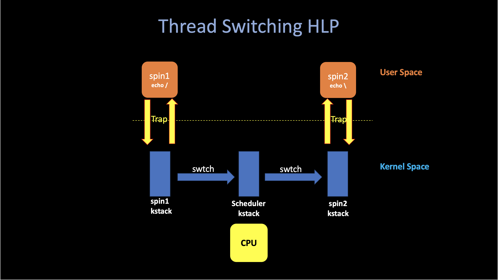
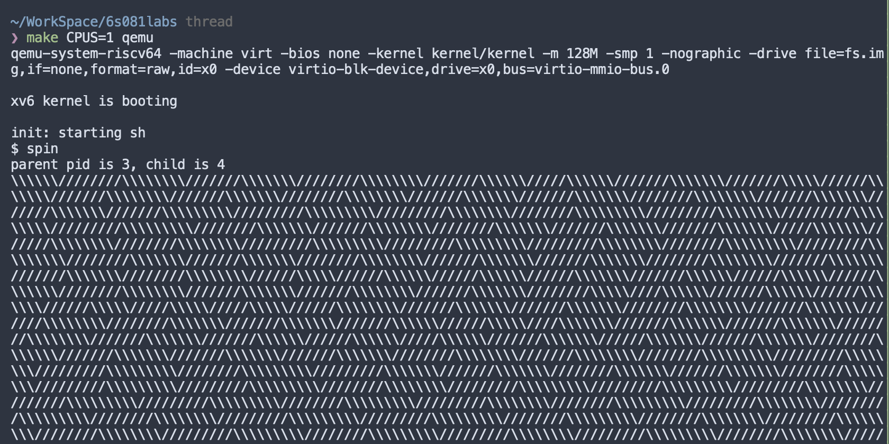

5. Scheduler
04/04/2022 By Angold Wang
The OS brings an illusion to user that there are many processes (larger than CPU cores) running at the same time by switching between them very quickly. There are two kinds of processes: -- I/O bound and CPU bound. Each of them has different mechanisms to manage by the scheduler.
- For the I/O bound processes:
- While executing, the CPU spend most of time waiting for I/O.
- For this kind of processes, the scheduler needs to sleep it when it is waiting for the device interrupt to avoid wasting CPU time and wake it up when there comes a target device interrupt.
- For the CPU bound processes:
- This kind of processes spend most of time executing instructions in the CPU.
- In this case, since there are usually multiple processes running in the CPU, the scheduler implements scheduling algorithms to manage them.
1. Multiplexing - Threads
Thread: one serial execution
- PC: Where is it in its execution.
- Registers: The compiler uses registers to hold variables.
- Stack: Each thread has its own stack dedicated to executing. Where records the record of function calls.
i. Interleaving
The Threading System: Manage the interleaving of multiple threads. We'd like to fire up hundred or thousand threads and have the threading system figure out how to juggle all those threads and cause them all to make progress.
Typically, there are two levels of interleaving:
- Multi-Core: Each threads runs on its CPU, and automatically get its one PC, Registers and Stack.
- Switching: How each CPU is going to switch among different threads.
Here is a high-level picture of thread switching in xv6:

ii. Example: Switching in a Single-Core Machine
This piece of code, which can be found in user/spin.c.
And what it does is basically fork the parent process and then both parent and child process echo '/' or '\'. Let's call them spin1 and spin2, as you can see from the program, both of them were simulate two essentially CPU-bound process and may need to let CPU switch between them (since it will compute forever), rather than wait them to finish.
int
main(int argc, char* argv[]) {
int pid;
char c;
pid = fork();
if (pid == 0) {
// child
c = '/';
} else {
printf("parent pid is %d, child is %d\n", getpid(), pid);
c = '\\';
}
for (int i = 0; ;i++) {
if ((i % 1000000) == 0)
write(2, &c, 1);
}
exit(0);
}
If we run this user-level program in xv6, and make qemu to simulate a single core machine:

As we can see, every once a while, the xv6 is switching between them. (forward slash -> timer interrupt -> backward slash).
2. Context Switching
i. Switching

The above figure outlines the steps involved in switching from one user process to another:
- A user-kernel transition (system call or interrupt) to the old process's kernel thread.
- A context switch to the current CPU's scheduler thread.
- A context switch to a new process's kernel thread.
- A trap return to the user-level process.
ii. Two Handy Points
1. Every core can just execute one thing at a time. It either running some processes' user thread, some processes' kernel thread or that core's scheduler thread.
2. In xv6, a process is either executing instructions in user level, or it is executing instructions in the kernel, or it is not executing at all and its state has been saved away into this combination of context and trapframe.
3. Scheduling
After introducing the abstract mechanisims in thread switching. In this section, we are going to look at the low-level details(code) of switching.
The xv6 scheduler implements a simple scheduling policy, which runs each process in turn. This policy is called round robin. Real operating systems implement more sophisticated policies.
i. Preempt
When a timer interrupt come, like we just saw in the last article os4. Interrupts, When a timer interrupts come, if the interrupts hasn't be unabled, the current running process will cause a trap, using the mechanisims we introduced in os3. Traps and after saving all its context in trapframe, it eventually come to devintr() and then return 2 to the which_dev variable after checking that it is an timer interrupt.
After that, both usertrap() (trap in user space) and kerneltrap() will see that which_dev is 2 and immediatly call yield() to let this process gives up the CPU and switch to the scheduler.
One interesting mechanisim there is that the yield will make xv6 hold current process's lock (p->lock). And release that lock in the scheduler's context. Also next time when the scheduler decide to resume this interrupted user process, it will hold that (p->lock), and the resumed code in yield will release that lock. We need this because p->lock protects invariants on the process's state and context fields. Imagine if the lock is not held: a different CPU might decide to run the process after yield had set its state to RUNNABLE, which will cause two CPUs running on the same stack and cause chaos.
ii. Sleep and Wake up
Scheduling and locks help multiple CPUs switching among different RUNNABLE processess. But we also need some abstractions that help threads intentionally interact.
For example, the printf($) case we mentioned in the last article, after the UART hardware finish sending the $ to the monitor, it will generate an interrupt in order to make consoleintr call wakeup to wake up all process that called sleep and waiting for this char.
The implementation is pretty much the same as the thread switching we mentioned above: If a process make a wait system call, eventually it will come to sleep function inside kernel, after set its state to SLEEPING, it will call sched() and then switch to the scheduler.
4. Kernel Pgtbl Per User Process
Xv6 has a single kernel page table that's used whenever it executes in the kernel. The kernel page table is a direct mapping to physical addresses, so that kernel virtual address x maps to physical address x. Xv6 also has a separate page table for each process's user address space, containing only mappings for that process's user memory, starting at virtual address zero. Because the kernel page table doesn't contain these mappings, user addresses are not valid in the kernel. Thus, when the kernel needs to use a user pointer passed in a system call (e.g., the buffer pointer passed to write()), the kernel must first translate the pointer to a physical address. The goal of this section and the next is to allow the kernel to directly dereference user pointers by adding a kernel page table per process.